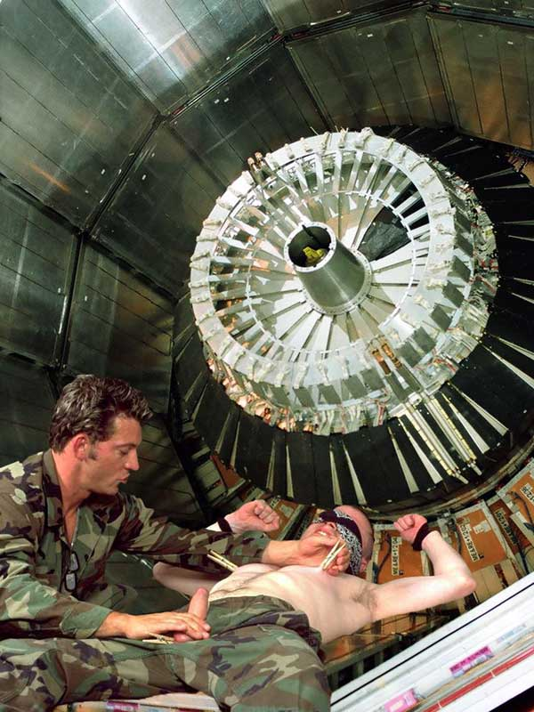

we are in this business over 20 years, attending South, North and Central america, with outstanding service, we are today most trusted company in this market. our customer loyality make us different.
In his entry for August 9, 1985, North summarizes a meeting with Robert Owen ("Rob"), his liaison with the contras. They discuss a plane used by Mario Calero, brother of Adolfo Calero, head of the
FDN, to transport supplies from New Orleans to contras in Honduras. North writes: "Honduran DC-6 which is being used for runs out of New Orleans is probably being used for drug runs into U.S." As Lorraine Adams reported in the October 22, 1994 Washington Post, there are no records that corroborate North's later assertion that he passed this intelligence on drug trafficking to the U.S. Drug Enforcement Administration.